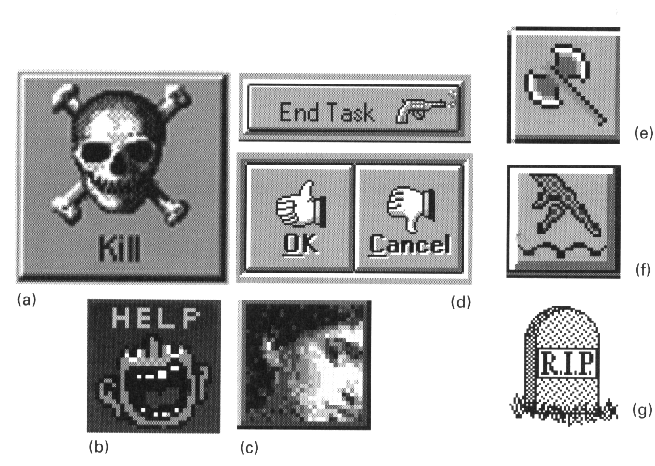

Image & Representation
(material from: Designing Visual Interfaces by
Mullet and Sano)
Images are particularly important in three areas:
- identification
- expression
- communication
a sign is 'something that stands for someone or
something in some respect or capacity.' It is the product of a
3-way relation between the representamen (that which
represents), the object (that which is represented), and its mental
interpretant (the intelligence doing the substitution)
3 levels
- syntactics - internal structure of the representation- the
perceivable form
- semantics - relation between the sign and the meaning of the
sign
- pragmatics - effectiveness of the syntax/semantics for a
particular person/community/culture- the use
representation depends on establishing a clear relationship
between a representation and its object
- icon - denotes its object by virtue of its own likeness or
resemblance to the object
- index - refers to the object indirectly, by means of an
association
- symbol - denotes the object by convention alone
One image may
not work alone - you can also combine imagery together through
- superimposition - one image on top of another
- conjunction - one image next to another
practical
considerations
- physical size
- number of pixels available
- number of colours / levels of greyscale available
Animation adds more possibilities to icons but animation
draws attention and that can be distracting if too many thing on
your desktop / phone / TV etc are bouncing / twirling / pulsing /
inflating / blinking etc
Principles:
- Immediacy - should be recognized at a glance without having to
analyze it
- Generality - imagery is normally used to represent a class of
objects, not a particular instance - abstraction creates
generality
- Cohesiveness - as in the previous week, images are not viewed
in isolation but as part of an overall system - shared
components and individual components
- Characterization - function by focusing on essential
characteristics
- Communicability - interpretation depends on the creator and
viewer sharing a common environment (physical, cultural,
conceptual)
So how about some modern examples
which are no longer available online, but the internet forgets
nothing ...
http://www.ready.gov/america/_downloads/nuclear.pdf
- local copy here
http://www.ready.gov/america/_downloads/explosions.pdf - local copy here
and a
slightly more humorous version here
Common Errors:
- misleading syntax - what do these tell me?
answer: takeoffs and landings (plane viewed from the
top, arrow viewed from the side)
- poorly integrated structure
if you need to think about the image and especially if you have to
break the image into pieces to understand it, then it doesnt work
a what does this mean?
b images that differ in just the direction
of an arrow are hard to parse
- dominant secondary elements - While its good to have a
certain amount of regularity, those regular elements should not be
the focus of the images
- using type as image
- using images for abstract concepts
hard to find appropriate images for abstract concepts
a - here is where balloon help is really useful to try and put
some text on the screen to ID these icons
b - boomerang for 'no-op'?
c - does the stairway suggest sort ascending and sort descending
d - step through a macro?
- images based on obscure allusions
a - master task list (stove icon, things you want to do
someday but aren't scheduled for a particular day - on the back
burner)
b - magnet movies an entry from one page to another in an
appointment book, axe tool breaks links established by the anchor
tool, footprints are backtrack
c - label looks more like a price tag, scrolled text?
- culture or langauge dependencies
a- defaults, screen dump, C-shell, hello world
b - DOS icon is an image of the original IBM PC - remember those
c - debugger
d - (apple for the teacher?)
e - spelling
f - back burner
g - drag on
- offensive or suggestive imagery

a - kill icon from next-step
d - gestures are culturally based, gun for killing tasks
Techniques:
- selecting the right vehicle
- refinement through progressive abstraction
- coordination to ensure visual consistency
Selection
- if the concept is a concrete, familiar object or a tangible,
externally obvious state, use an iconic sign
- if the concept will be used repeatedly throughout an
application or environment, consider establishing a conventional
symbolic or indexical sign, especially if an existing sign can
be borrowed from the 'real' world'
- in most other cases - and particularly when the concept is an
abstract process or a subtle transition between states - a
textual label should be used
- avoid the mixing of purely textual, iconic and indexical or
symbolic signs
Refinement
- determine the appropriate level of abstraction based on the
subject matter, audience, and display resolution
- begin with an image seen from the viewpoint including the most
characteristic contours
- use the trace overly technique to rapidly develop a series of
drawings derived from the original image. Omit details until
only the most essential or characteristic elements remain.
Experiment with different combinations of elements to identify
those that best characterize the object
- simplify complex shapes into regular geometric forms.
- eliminate contour information that is not required for
recognition of the object. Experiment with negative space to
suggest contours.
Coordination
- begin with sketches of the full set of images
- use a similar point of view and type of perspective for each
image. Determine the predominant viewpoint and redraw any
divergent images from the new perspective
- use a similar form of representation and level of abstraction
(i.e. dont combine icons with symbols)
- use a consistent size, orientation, layout, color, and overall
visual weight for each image. Use a layout grid to help insure
consistent internal structure across images
- wherever
possible, use the same elements - including line weights,
curvatures, textures, and forms - throughout the image
set.
last updated 3/28/2012 - updated
in-class experience